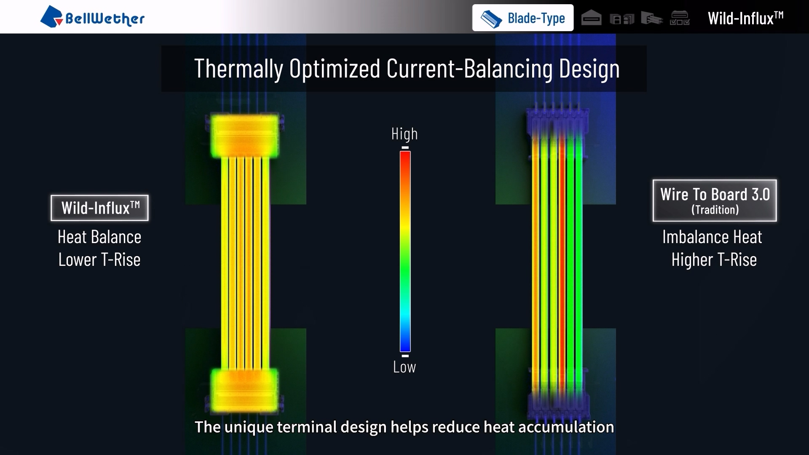
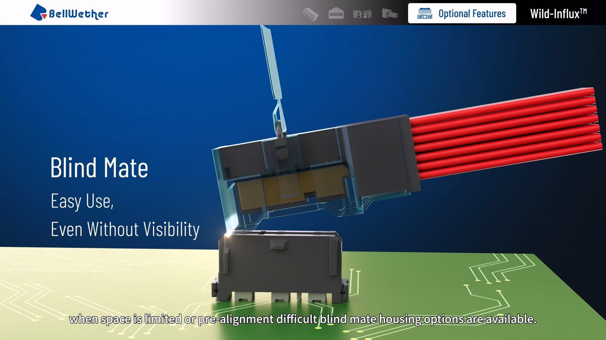
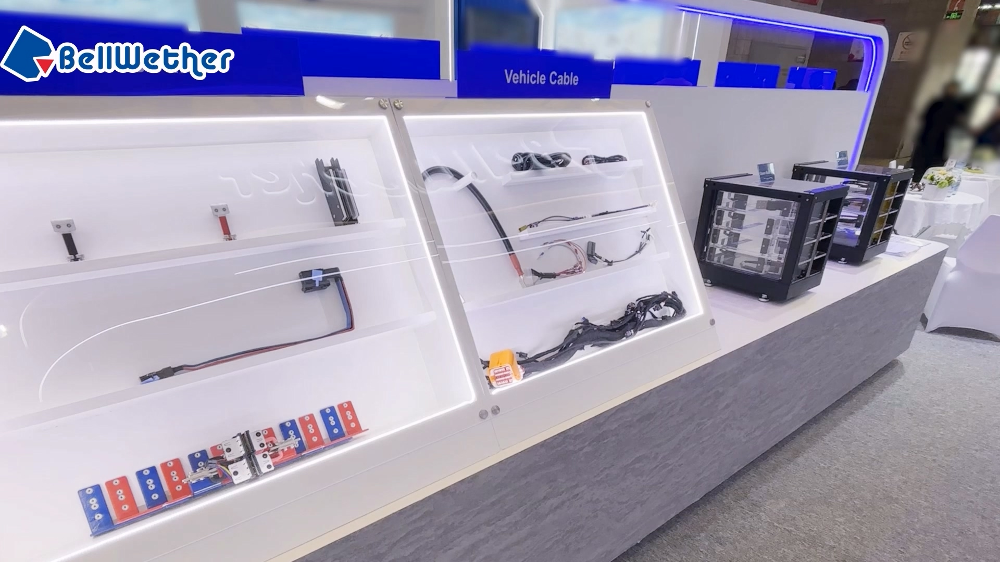
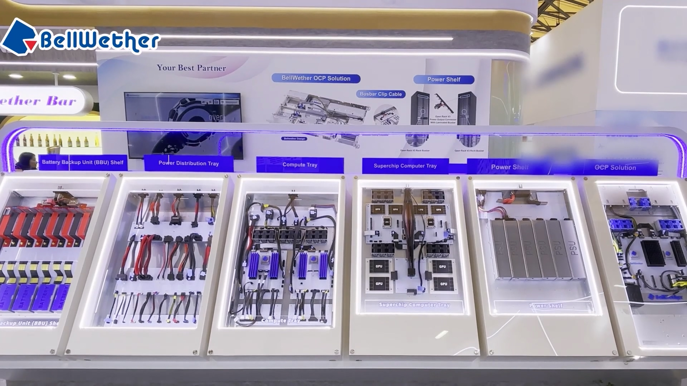

技術行銷 · B2B 內容 · 展會行銷
把複雜工程技術，轉化成清楚、有效的溝通。
我是 Jeff Lin，工作位於電子零組件、技術敘事與 B2B 行銷的交會點。結合國際視覺製作背景與連接器產業實務經驗，我協助產品團隊與工程師把技術規格轉化為清楚的數位內容、展會素材與客戶溝通材料。
台灣中文 / 英文可與國際團隊協作
技術行銷產品敘事展會內容3D 視覺化數位內容國際製作
技術行銷產品敘事展會內容3D 視覺化數位內容國際製作
35K+YouTube 長影音＋Shorts 累積觀看
4主力產品／技術長影音，截至目前持續增加
13B2B 短影音，截至目前持續製作
5+Top Geography 可見觀眾市場
01 · 定位
在工程資訊與客戶溝通之間，建立清楚的連結。
在 Bellwether Electronic，我與 PM、工程師共同討論主推產品、釐清技術訊息，並規劃數位渠道與國際展會所需的客戶溝通內容。
過去的 VFX、3D 與國際製作經驗，讓我能從企劃、技術 Review 一路銜接到視覺製作與最終交付。
我也負責統整外包製作專案：定義 Brief、對齊內部需求、協調 Vendor、彙整利害關係人回饋，並掌握技術正確性、Review、排程與交付品質。
02 · 精選作品
把技術內容做成真正能用於商業溝通的故事。


01 / 代表專案
Wild‑Influx™
技術產品敘事與製作管理
挑戰把電氣與熱設計概念轉化為清楚的客戶溝通內容，避免只依賴原始規格表。
我的角色內容企劃、技術訊息對齊、腳本撰寫、Vendor 協調與視覺品質控管。
貢獻與產品及技術團隊確認核心訊息，再把電流平衡、連接器設計與溫升關係轉化為視覺敘事。
行銷價值建立可重複運用於展會、數位渠道與業務溝通的產品內容資產，協助受眾更快理解產品的技術優勢。
跨部門協作直接與 PM、工程師確認技術正確性，同時管理外部製作夥伴，掌握排程與交付品質。
觀看產品影片 ↗
02 / 內容系列
Bellwether 短影音內容
持續更新的 B2B 技術與品牌內容
建立持續性的短影音內容流，將產品、技術、展會活動與品牌訊息轉化為簡短、容易理解的視覺內容。
內容企劃技術轉譯3D / MotionAI 輔助製作剪輯
截至目前 13 支，持續增加中。 在所選分析期間，Shorts 累積 7,011 次觀看，持續支援產品曝光、社群、展會與品牌長期內容累積。
查看 YouTube Shorts ↗
03 / 國際 B2B 展會
International Trade Show Content
electronica China · 展會內容製作
規劃並拍攝產品亮點、攤位活動、技術展示與展會關鍵時刻，再整理成展會回顧與社群可用內容。
攤位內容現場流程拍攝展會回顧社群素材
觀看展會影片 ↗


04 / 成效與觸及
可驗證的內容產出與觀眾觸及
Top-of-funnel 內容成效
B2B 轉換週期較長，而 Pipeline 數據由商務／業務團隊掌握。這裡聚焦在我能直接衡量的漏斗前端指標：內容觸及、觀眾留存，以及主要目標市場的地理興趣。
35K+總觀看數主力產品影片與技術短影音
4 + 13已發布內容4 部深度產品長影音 + 13 支短影音 · 持續增加
5+ 市場可見國際觸及台灣 · 美國 · 印度 · 南韓 · 俄羅斯
核心受眾技術與產業觀眾B2B 產品與技術內容
03 · 經歷
從視覺製作，逐步走向科技 B2B 行銷。
2025—現在
Bellwether Electronic Corp.
Marketing Specialist · B2B 技術內容與展會
與 PM、工程師合作，把連接器技術轉化為客戶可直接使用的內容。負責國際展會的內容規劃與素材交付，例如 electronica China；管理外部製作夥伴，並製作產品介紹所需的數位內容。
2022—2023
MPC Canada
Key FX Artist · 國際製作
在快速節奏的國際製作流程中，於緊密里程碑下交付高標準視覺內容。以英文跨部門、跨時區協作，建立利害關係人溝通、結構化 Review、品質控管與準時交付的工作習慣。
Selected credits · House of the Dragon · Disenchanted
2021
HTC Corporation
Video Production · 產品發布支援
支援硬體產品的數位發布素材與後期製作流程，確保全球網站與社群渠道所需視覺內容具備一致且高品質的呈現。
2016—2021
MoonShine Animation
Technical Artist / FX Artist
製作大型科技品牌的商業與品牌內容，包含 ASUS ROG；在創意視覺、技術工具與專案需求之間建立可執行的製作方案。
01Technical Translation
把工程細節連結到客戶能理解的產品價值與溝通重點。
02B2B Content & Campaigns
產品影片 · 技術視覺內容 · 社群內容 · 短影音
03Event & Booth Support
現場內容紀錄 · 攤位顯示素材 · 展會溝通內容 · 展後回顧
04Project & Vendor Coordination
Brief 撰寫 · 排程追蹤 · 利害關係人 Review · 外部製作夥伴管理
工具ChatGPTClaudeHiggsfieldPremiere ProAfter EffectsPhotoshopCinema 4DUnreal Engine
語言 / 溝通中文 — 母語英文 — Professional Working Proficiency